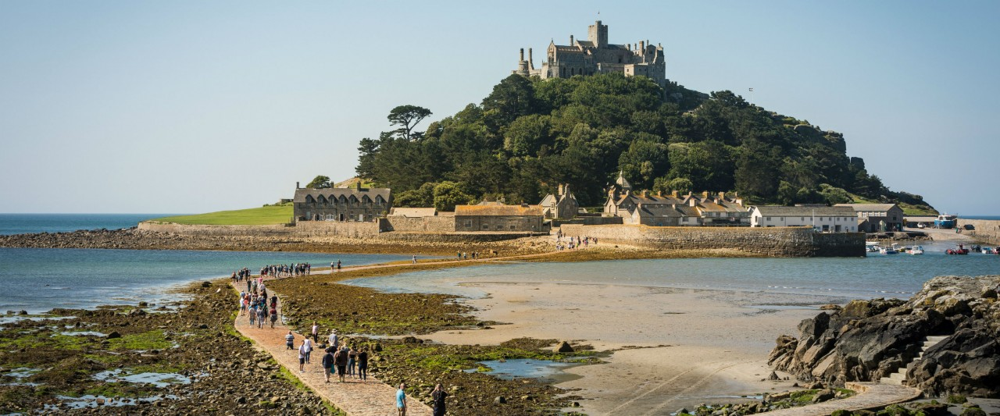
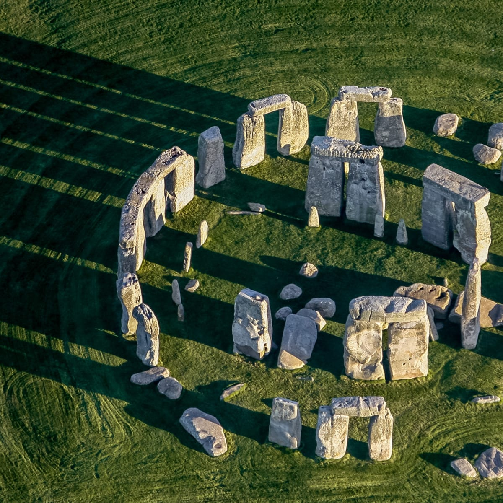
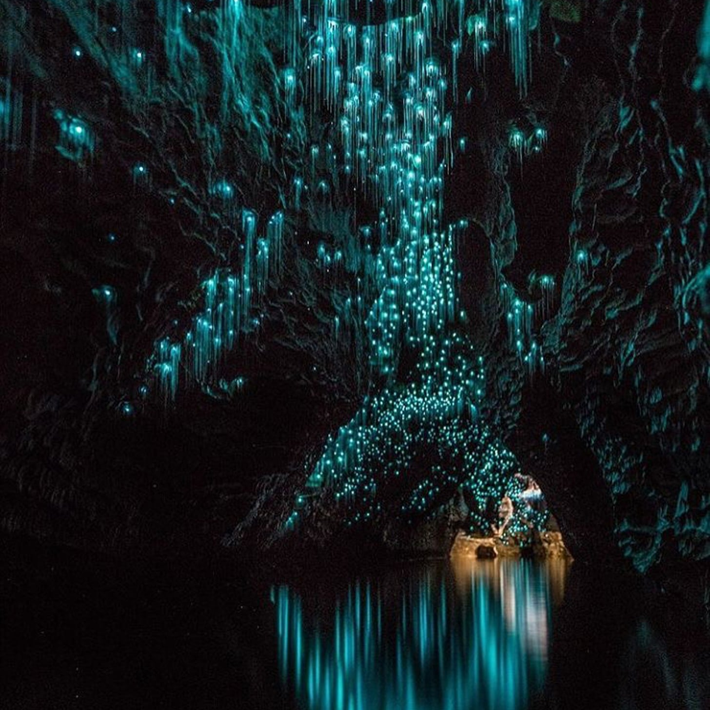
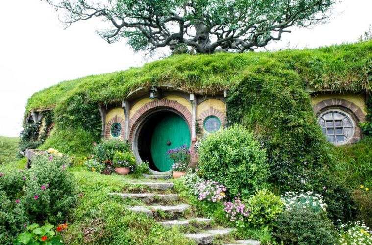
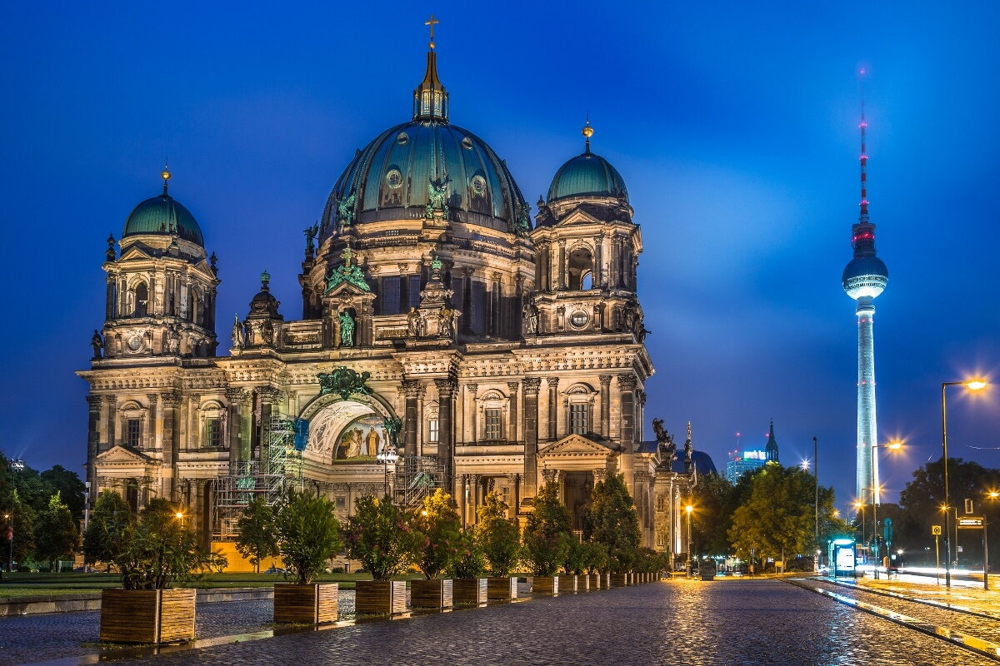

Vietnam has been moving up my list for a while now. There's a lot of natural beauty and history here that I'd like to experience first hand. I'm not too familiar with the culture either but I find it intriguing enough I'd like to visit. I'd also love to try all their food!


England is a trip that I hope to make my next. Just like the rest of Europe, England has so much rich history to explore and see. It's probably the place on this list that I've researched the least but it's still some place that if someone offered me a ticket to go, I'd take it and run no questions asked.


New Zealand has been the longest standing country on my list of places to visit yet. After living in Hawaii, I've wanted to see more of island life in other places. Besides the beaches and waters, there's a ton of film locations here that I'd love to see. The glow worm caves pictured above looks like you're entering another world. I've never seen anything like it before.


There is a lot of history coming out of Germany that I'd love to dive into. A lot of WW2 history as well as modern. Like most of Europe their architechture is incredible as pictured in the photos above. There's so much sightseeing to do that I think any of it would be worth traveling to.